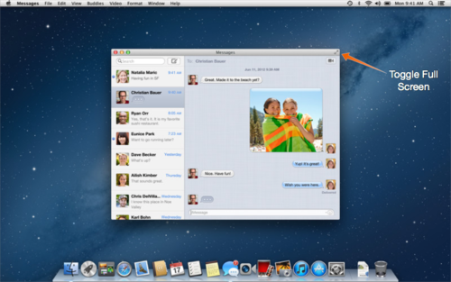
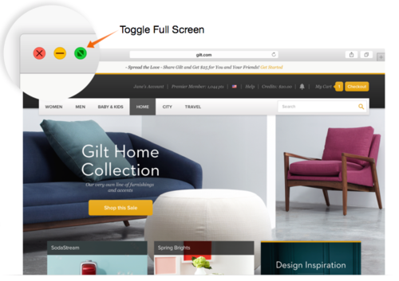

Universal Apps
In OS X Lion (10.7) Apple added support system-wide support for running your native apps full screen and in their own space.1
In OS X Mountain Lion (10.8) any app that supported full screen mode would get a new button in the far right portion of the window’s title bar to toggle full screen mode.

The button remained here through OS X Mavericks (10.9) but has now moved again in OS X Yosemite (10.10) and into a very prominent spot.

Before Yosemite, this little green button used to be the ‘Zoom’ button. Apps could change what Zoom meant. Some apps used it to maximize the window to fill all available screen space. Some apps tried to be smart and only get big enough to show of the content inside the window.
I’ve been hearing people complain about the Zoom button becoming the full screen button but for me personally, I’m kind of happy it provides a consistent user experience now even if some people don’t really like this new user experience of making the app full screen.
Then I started asking myself, why would Apple take this button that used to behave differently and make it do something new. Not just any button either. This one of only a handful of buttons that are displayed on every standard window. They must deem this new user experience better than what the button was doing. The Zoom button wasn’t consistent in what it did and the new full screen button is. It could be as simple as that. But if that’s not the driving factor for the change then what could it be?
Then it hit me. Universal Apps. Right now a lot of people think of universal apps as being one app for both iPhone and iPad. But what I mean is why not one app that works on OS X and iOS? You submit one app to the App Store and users can use it on all of their Apple devices. Maybe Apple is trying to steer OS X a little closer to iOS. I’m not saying that ALL apps will be full screen only and I’m not advocating for a Windows 8 style separation of apps but a lot of people are coming to the Mac from iOS and it would be nice if that transition could be made as easy as possible.
Other things to take into consideration would be the new ‘dark mode’ for menus and the Dock. This does have the immediate benefit of providing a dark UI for some pro-style apps like Final Cut but this could also be a way to force developers to realize that the menu bar isn’t going to stay the same, so you should probably use the newer API for putting things up there. I could imagine an API that would allow the current fullscreen app to change the color of the menu bar, like we can change the status bar in iOS. We could also see something like full screen apps that scroll under the menu bar, like on iOS.
Again, changing the behavior of the Zoom button could be as simple as proving a consistent user experience. But it could also be more.
-
https://en.wikipedia.org/wiki/Mac_OS_X_Lion#New_or_changed_features ↩